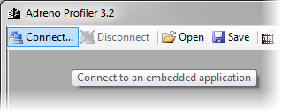
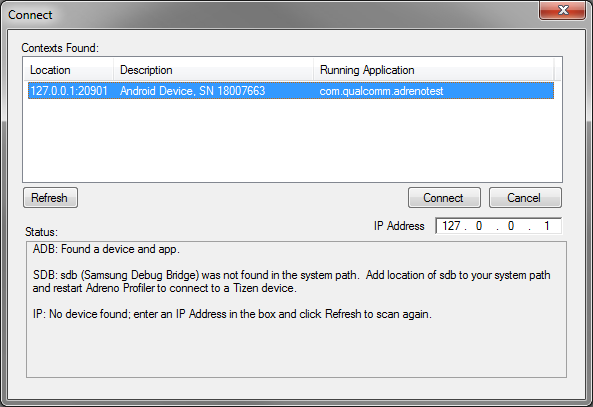
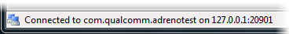

Adreno Profiler constantly scans for compatible devices connected to your computer.
With Adreno Profiler running, launch an embedded application.
Click the "Connect..." button on the main toolbar. A dialog box will appear, listing all detected graphics applications.

Select an entry in the list and press "Connect". Note that WinRT devices require an IP address to be entered in the IP address box at the bottom right of the Connect dialog before they will show up in the list. If nothing shows up in the list, click the "Refresh" button to re-scan for connected devices & apps.

After a brief pause, the status bar will indicate the connection was established.

You may now create a new Grapher or Scrubber document via the main toolbar and begin profiling.
If you are unable to connect to your application, consult the FAQ for troubleshooting help.